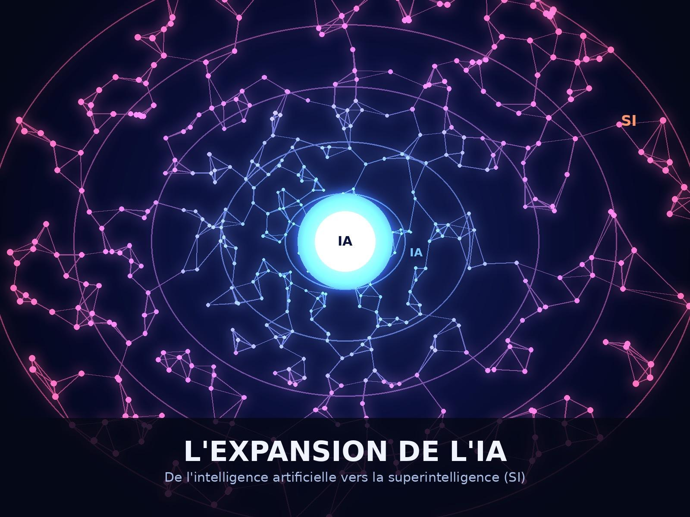

L’expansion de la Super Intelligence (SI/AI)
La technologie connaît aujourd’hui une transformation rapide qui touche presque tous les secteurs de la société. Longtemps appelée « intelligence artificielle » ou « AI », elle est désormais désignée par le terme « Super Intelligence » (SI) dans l’administration américaine. Le président Donald Trump a annoncé cette nouvelle appellation et a signé, le 29 septembre 2026, un décret demandant aux agences et départements fédéraux américains d’utiliser « Super Intelligence » et « SI » à la place de « Artificial Intelligence » et « AI » dans leurs communications officielles.
Cette nouvelle appellation reflète l’idée que les technologies actuelles vont au-delà de la simple reproduction de certaines capacités humaines. La SI est capable d’analyser d’immenses quantités de données, de générer du contenu, d’automatiser des tâches complexes et d’assister les humains dans des domaines tels que la médecine, les sciences, l’industrie, l’éducation et la finance.
Selon l’administration américaine, le terme « Super Intelligence » permettrait de mieux représenter l’évolution et le potentiel de ces technologies.
L’expansion de la SI représente également un enjeu économique et géopolitique majeur. Les États-Unis cherchent à conserver leur avance technologique, notamment face à la Chine. Le développement de systèmes toujours plus puissants nécessite d’importantes infrastructures informatiques, de grandes quantités de données et des investissements considérables.
La compétition autour de la SI devient donc également une compétition pour le leadership économique, scientifique et stratégique mondial.
Cependant, cette expansion soulève plusieurs questions importantes. L’automatisation pourrait transformer profondément le marché du travail et certaines professions pourraient être amenées à disparaître ou à évoluer. La protection des données personnelles, la cybersécurité, la désinformation et la responsabilité des systèmes intelligents sont également des enjeux majeurs.
Plus les capacités de la SI augmentent, plus la question de son contrôle et de son utilisation responsable devient importante.
Le changement de vocabulaire décidé par Trump ne signifie pas pour autant qu’une nouvelle technologie totalement différente est apparue. Dans le cadre du décret présidentiel, « Super Intelligence » et « SI » désignent actuellement les technologies couvertes par la définition fédérale existante de l’intelligence artificielle. Il s’agit donc à la fois d’un changement de terminologie et d’une volonté politique de présenter ces technologies comme une nouvelle étape du développement technologique.
En conclusion, l’expansion de la SI constitue l’une des transformations technologiques les plus importantes de notre époque. Le passage du terme « AI » à « SI » aux États-Unis montre également que cette technologie est devenue un enjeu politique, économique et stratégique majeur. L’objectif ne devrait toutefois pas être uniquement de développer des systèmes toujours plus puissants, mais aussi de s’assurer que leur utilisation reste responsable, sécuritaire et bénéfique pour l’ensemble de la société.